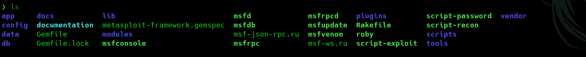

https://www.hackbysecurity.com/blog/metasploit-cheat-sheet-1
Se trata de un framework programado en ruby y compuesto por varias herramientas que nos permiten realizar el proceso de explotación que veíamos anteriormente de manera más sencilla y transparente.
Tiene un conjunto de exploit muy grande que se va actualizando en función de las vulnerabilidades que van saliendo.
No solo los almacena sino que nos permite realizar toda la fase de lanzamiento del exploit contra un objetivo.
Su ubicación de instalación es:
cd /usr/share/metasploit-framework/

Nosotros nos tenemos que quedar con algunos que son esenciales.
Metasploit permite combinar los exploits que implementa con diferentes payloads repartidos en 3 categorías:
No necesitan de metasploit para recibir conexión, son auto contenidos.
Por ejemplo puede ser crear usuarios, etc.
Payloads para tareas específicas como puede ser establecer una conexión con la máquina y devolver una conexión reversa.
Los stagers lanzan la conexión reversa y una vez establecida usan los payloads de stages para obtener información, etc dentro de la máquina objetivo